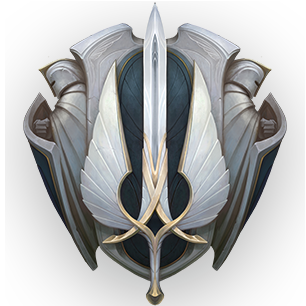
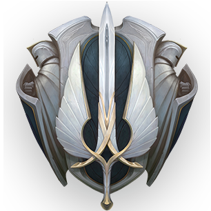

아이콘

명망 높은 역사의 군대를 지닌 강력하고 질서 잡힌 왕국, 데마시아의 백성들은 언제나 정의와 명예,
의무를 가장 고귀한 것으로 여기며 자국의 문화유산을 자랑스러워했다.
하지만 이런 고상한 신념에도 불구하고, 이 자급자족 국가는 최근 몇 세기 동안 점점 고립되어 가고 있었다.
이제 데마시아는 혼란에 빠졌다.
악몽 같은 룬 전쟁 이후 마법을 피하기 위한 피신처로 세워진 수도,
위대한 도시 데마시아는 마법의 힘을 약화하는 특이한 흰색 돌 페트리사이트의 수수께끼 위에 건설되었다.
바로 이곳에서 데마시아 왕가는 오랫동안 외딴 마을과 농지, 숲, 광물 자원이 풍부한 산지를 방어해 왔다.
하지만 자르반 3세의 갑작스러운 죽음으로 유일한 후계자로서 왕좌에 오른 왕자 자르반 4세를 귀족들은
여전히 인정하지 않고 있다.
불안의 시대가 도래하자 경비가 삼엄한 국경 너머에 사는 이들을 향한 의심은 점점 커지는 한편 과거의
여러 우방은 자국을 지키기 위해 다른 곳으로 눈을 돌리기 시작했다.
어떤 이들은 데마시아의 황금기가 이미 지났다고 수군거린다. 많은 이들의 생각처럼 데마시아인들이
변화하는 세상에 순응하지 않는 한 데마시아의 쇠락은 불 보듯 뻔했다.
땅의 모든 페트리사이트를 동원하더라도 데마시아의 자멸을 막지는 못할 것이다
리그 오브 레전드에 등장하는 두 주인공 급 국가 중 하나.
여러모로 녹서스와 대비되는 설정 때문인지 라이벌 설정을 가지고있고 질서와 정의의 국가라고 할 수 있다.
엄격한 법을 통해 악에 대해서는 무관용적인 정책으로 질서를 지켜왔다.
하지만 독선이 지나쳐 다른 국가들의 반감을 사는 동시에 스스로를 자신들의 질서를 위해 고립시킬 정도이며,
질서의 국가이기는 하나 통용되는 선(善)의 기준은 의외로 좁은 편이다.
정의와 도덕을 중시하며, 비옥한 농작물과 군사정책에서 비롯되는 최고의 군사력을 자랑한다.
농경으로 인한 윤택함과 막강한 전신갑주를 걸친 육군, 중세적이지만 화려한 문화를 뽐낸다는 점에서 중세 유럽,
특히 막강했던 중세 프랑스에서 많은 모티브를 따온듯. 구식체제로 인한 신교도 탄압이 최근에 재점화 되었다는
점과 그 직후의 민중혁명까지 포함하면, 근세 프랑스를 다루는 현대작품들의 클리셰도 일부 차용했다.
물론 귀족주의와 질서주의를 과장하고 심화시킨 역사와 설정부터는 현실에 없는 독특함을 지닌 국가이다.
먼 옛날에 케일의 제자들이 만든 가혹하고 독단적인 정의주의를 숭배하지만, 그에 의한 폐해가 대물림되는 나라다.
현재는 작중의 다른 국가의 기술이 발전하는 가운데 귀족주의와 폐쇄성으로 쇠락 단계에 있으며,
사일러스의 주도로 차별받던 마법사 하층민들의 혁명봉기가 진행 중인 것으로 묘사된다.
엠블럼

아이콘